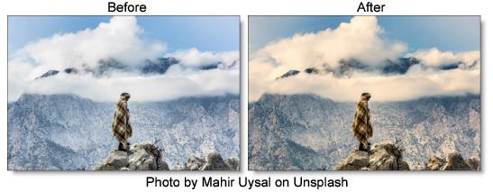

Develop
Description
Provides useful developing controls for globally adjusting the color and tonal scale of your images.
Category
Color.
Controls
Auto-Equalize
Auto-Equalize uses the calculated white point for camera RAW images. This is disabled when Develop is applied to non camera RAW images, since adjusting the white point does nothing in this case.
Temperature
Sets the color of the image to be either warmer or cooler. Dragging the slider to the right makes the image cooler (bluer) and dragging the slider to the left makes image warmer (redder).
Tint
Adds either Green or Magenta to the image. Dragging the slider to the right makes the image more magenta and dragging the slider to the left makes the image more green.
Exposure
Sets the overall image brightness, with a greater effect in the high values. Adjust the slider until the image looks good and the whites are at the right level. Use Recovery to bring highlight values down. Exposure values are in increments equivalent to f-stops. An adjustment of +1.00 is similar to increasing the aperture 1 stop. Similarly, an adjustment of –1.00 is similar to reducing the aperture 1 stop.
Recovery
Reduces the tones of extreme highlights and attempts to recover highlight detail lost because of overexposure.
Fill Light
Lightens shadows to reveal more detail while maintaining blacks. Take care not to over apply the setting and reveal image noise.
Blacks
Specifies which image values map to black. Moving the slider to the right increases the areas that become black, sometimes creating the impression of increased image contrast. The greatest effect is in the shadows, with much less change in the midtones and highlights.
Brightness
Adjusts image brightness, mainly affecting midtones. Set the overall tonal scale by setting Exposure, Recovery, and Blacks. Then set the overall image brightness. Large brightness adjustments can affect shadow or highlight clipping, so you may want to readjust the Exposure, Recovery, or Blacks slider after adjusting brightness.
Contrast
Increases or decreases image contrast, mainly affecting midtones. When you increase contrast, the middle-to-dark image areas become darker, and the middle-to-light image areas become lighter. The image tones are inversely affected as you decrease contrast.
Vibrance
Adjusts the saturation so that clipping is minimized as colors approach full saturation, changing the saturation of all lower-saturated colors with less effect on the higher-saturated colors. Vibrance also prevents skin tones from becoming over saturated.
Saturation
Adjusts the saturation of all image colors equally.